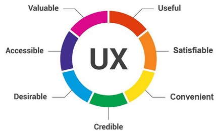
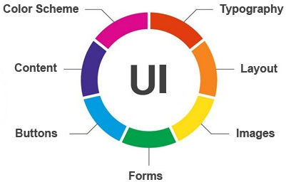

UX (User Experience) designers are focused around designing a product on how it feels for the user experience they take a user first approach in the design, for example how the product feels and works for the user.
A UI(User Interface) designer will design the layout of the page where buttons are placed, what color scheme the site should use, and how the flow of the site works. UI designers are primarily design focused
